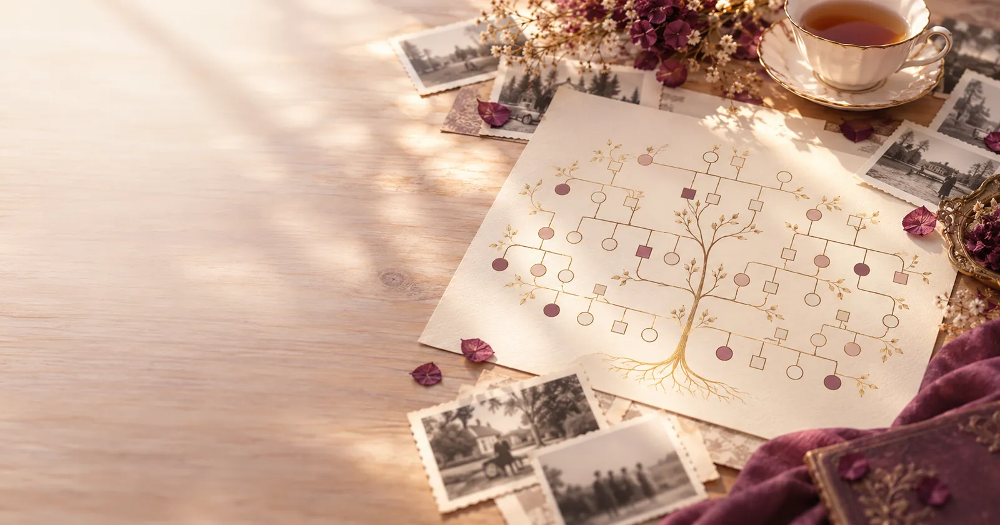

Le génosociogramme, expliqué simplement
Le génosociogramme est un arbre généalogique enrichi. En plus des prénoms, on y note les dates, les événements marquants, les liens et la place de chacun·e. On l'appelle parfois arbre généalogique psychologique.
Un génosociogramme, c'est ton arbre familial sur trois ou quatre générations, annoté de ce qui a compté dans chaque vie, pour voir ce qui se répète.

Ce qu'on y note
Un arbre classique dit qui descend de qui. Le génosociogramme ajoute ce qui s'est passé, quand et où. Six types d'informations suffisent pour commencer.
Les dates
Naissances, décès, unions, séparations. Avec les dates, on peut calculer les âges et les comparer.
Les événements
Déménagements, exils, deuils, ruptures, faillites, guerres traversées, secrets connus.
Les liens
Les couples, les enfants, mais aussi les relations proches, distantes ou rompues.
Les places
Aîné·e, cadet·te, enfant unique, enfant venu·e après une perte, enfant qui porte le prénom d'un·e autre.
Les métiers
Ce que chacun·e faisait, ce qu'il ou elle aurait voulu faire, les métiers qui se transmettent.
Les lieux
Villes, régions, pays d'origine. Ils racontent les départs, les arrivées et les racines.
Arbre généalogique, génogramme, génosociogramme
Les trois se ressemblent au premier coup d'œil. Ce qui change, c'est ce qu'on y regarde.
| Arbre généalogique | Génogramme | Génosociogramme | |
|---|---|---|---|
| Ce qu'il montre | Qui descend de qui : les ancêtres et les descendants. | La structure de la famille et les liens entre ses membres. | La famille, les liens, et ce qui s'est passé dans chaque vie. |
| Ce qu'on y note | Noms, dates et lieux de naissance, de mariage, de décès. | Personnes, couples, enfants, relations, avec des symboles. | Tout cela, plus les événements marquants, les métiers, les âges, le contexte historique et social. |
| À quoi il sert | Retrouver ses origines et garder une trace de la lignée. | Voir d'un coup d'œil comment une famille est organisée. | Repérer ce qui revient d'une génération à l'autre : prénoms, âges, dates, épreuves. |
| D'où il vient | De la tradition généalogique. | De la thérapie familiale américaine. | D'une proposition faite en France, à partir du génogramme. |
Fais glisser le tableau pour voir toutes les colonnes.
La même famille, deux façons de la dessiner
D'abord un génogramme sobre : on voit la structure. Puis le génosociogramme : les dates et les événements font apparaître un âge qui revient. Il s'agit de la famille fictive de notre exemple.
Le génogramme
Des symboles et des traits. On lit qui est qui, qui est en couple, qui est l'enfant de qui.
Le génosociogramme
Les mêmes symboles, plus les années et les événements. L'âge de 32 ans revient sur trois générations : une coïncidence à interroger.
Les symboles utilisés ici sont expliqués sur la page les symboles du génosociogramme.
D'où vient le mot
Le génogramme vient de la thérapie familiale américaine. On l'associe notamment à Murray Bowen, puis à Monica McGoldrick, qui a contribué à en diffuser les symboles.
Le mot génosociogramme a été proposé en France par Anne Ancelin Schützenberger. Le préfixe « socio » rappelle que chaque vie s'inscrit dans un contexte : une époque, un lieu, des événements collectifs comme les guerres ou les exils.
Aujourd'hui, les deux mots sont parfois employés l'un pour l'autre. Ce qui compte, c'est ce que tu y notes.
Et maintenant ?
Tu sais ce qu'est un génosociogramme. Tu peux voir un exemple lu pas à pas, suivre la méthode en six étapes, ou commencer directement le tien dans l'outil gratuit.
Questions fréquentes
Quelle est la différence entre un génogramme et un génosociogramme ?
Le génogramme montre la structure d'une famille et les liens entre ses membres, avec des symboles. Le génosociogramme reprend ce dessin et y ajoute les dates, les événements marquants et le contexte de chaque vie, pour repérer ce qui revient d'une génération à l'autre.
Faut-il connaître toute sa famille pour faire un génosociogramme ?
Non. On commence avec ce que l'on sait, même si c'est peu. Les cases vides font partie de l'histoire : elles montrent ce qui s'est perdu ou ce qui ne s'est pas dit.
Combien de générations faut-il représenter ?
On remonte en général trois ou quatre générations : toi, tes parents, tes grands-parents et, si tu le peux, tes arrière-grands-parents. C'est souvent assez pour voir apparaître des dates ou des événements qui se répondent.
Un génosociogramme explique-t-il ce que je vis ?
Non. Il fait apparaître des coïncidences : un âge, un prénom, un métier, une épreuve qui reviennent. Ce sont des pistes à interroger, pas des causes. C'est une grille de lecture parmi d'autres.
Pour aller plus loin
Comment faire son génosociogramme
Les six étapes, les questions à poser à ta famille et quelques conseils.
Un exemple lu pas à pas
La famille fictive de Léa, sur quatre générations, et ce qui s'y répète.
Les symboles du génosociogramme
La légende illustrée : personnes, couples, enfants, relations.
Le modèle vierge à imprimer
Un génosociogramme vide en PDF, à remplir à la main.
L'outil en ligne gratuit
Dessine ton arbre familial : les répétitions sont repérées automatiquement.